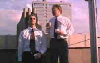
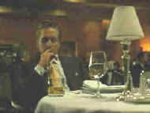

Columbia/1997/97m/WS,ANA,1.85, PS
1.33
A fascinating low budget debut by writer/director
Neil LaBute.This very nasty tale told with a perverse relish takes place in the office
corridors of big business, where people are easily sacrificed to
ambition.
When transferred on special assignment from their company, two
young executives make a pact to "get even with women." for the bad
treatment they have supposedly received. The proposal comes from Chad after listening to
Howard lament about being dumped by his girlfriend. Chad, a rung lower on the company's
totem pole than Howard, relates that his woman has recently moved out on him.
Once settled into their temporary business assignment, Chad finds
the perfect subject for their experimental torture, a deaf secretary. Both Chad and Howard
will woo the girl, divide her affections, play with her until she falls for one over the
other and then drop the big revenge bomb. Chad is as nasty as a jagged shard of broken
glass while Howard is too weak to resist the temptation to be more like than energetic and
better looking Chad.
Shot by LaBute is a naturalistic style on a tight schedule, there
is an intimacy about the film, almost making the audience an accomplice in the
nastiness. The deed and the filmmaking are both down and dirty.
 |
.Chad and Howard compare
notes©Columbia |
LaBute works very well with his
three principal actors. Aaron Eckhart gives Chad an icy edge. He's an attractive villain
that you never like. Howard as played by Matt Malloy is almost a victim. Malloy makes you
feel Howard's hesitation at every step. The remarkable performance is by Stacy Edwards as
dead secretary Christine. Not only is she a very sympathetic character, Edwards is so on
target it's hard to believe that she herself does not suffer from deafness. It's
interesting to watch her character change as the plot thickens and her realization in the
car in confrontation with Matt is nothing short of brilliant.
The DVD transfer is limited by the source material. With a
miniscule budget(supposed $25,000)and a break-neck schedule, the look of the film suffers.
It's not always perfectly sharp, but I tend to fault the source material. There is some
excess grain and colors lack pop. The sound is just fine. Columbia has delivered In
the Company of Men as a special edition featuring two commentary tracks by cast and
crew. Everyone seems to have a lot of fun with the commentary and having so many
principals involved keeps the chat lively and informative. |
Universal/1973/129m/FS
1.33
The
movie is as smooth as the beautifully plotted con of the title. Director George Roy Hill
works from a sterling screenplay by David S. Ward. You can sense a synch between the
writer and director. Hill's pacing is perfect. From phase to phase The Sting
moves swiftly in precisely executed strokes to its very satisfying conclusion.
When Johnny Hooker mistakenly pulls a small con on a mob money
runner, his partner Luther is killed in retribution. Johnny takes it on the lam in search
of big con specialist Henry Gondorff. Hooker wants to get even for Luther's death and the
big con seems the way to go. Gondorff is the only sting artist around who's good enough to
pull it off. Gondorff can't resist the lure and before you can say Doyle Lonnegan(the
mark), the partners begin to set up The Sting.
Stars Paul Newman and Robert Redford are teamed again under
George Roy Hill's direction after the trio's success with Butch Cassidy and the
Sundance Kid. This time the perfection of script marries with terrific star power in
creating a screen classic. Newman is a great Henry Gondorff. His drunk scenes when he
sucks Lonnegan into the con during a railroad card game are a masterful combination of
comic and straight acting. Redford has just the right measure of innocence to make Johnny
Hooker special. Robert Shaw invests Doyle Lonnegan with blown up self importance and a
short fuse ever about ignite. Hill works splendidly with the large cast, getting the best
from all of them.
The rag time music of Scott Joplin as interpreted by Marvin
Hamlisch accompanies the action with a charm that emphasizes the era 1920's era of the
film. The inspiration for the scene cards setting separating each phase of the movie adds
to the overall delight.
 |
Gondorff plays the mark.©Universal |
The Sting turns out to be an excellent DVD after the first title cards seem far
too grainy. It's certainly the best quality video I've seen of this wonderful film. The
colors are brighter than ever on video and depth of detail is excellent. The 2-channel
mono Dolby Digital sound is clear and all the sharp dialogue is cleanly delivered. |
Polygram/1997/128m/WS 2.35,PS 1.33
The Game has an interesting concept. A
player has a real life adventure designed for him. He is a participant in a dangerous but
controlled mystery.The lines between the game and reality are blurred. Danger is palpable.
Can you stop playing once you have entered into The Game?
Ultra successful, multi-millionaire Nicholas Van Orton's life is
dominated by work. For his birthday, philandering brother Conrad gives him a
present of a passport to The Game. At first, Nicholas brushes the frivolous
idea aside, but curiosity gets the best of him and he presents his passport at the offices
of The Game. Before acceptance as a player, Van Orton must undergo a series of
psychological tests to make sure he is up to the challenges of the unusual pastime.
He reluctantly goes along with the requirements and before you know it he embroiled in a
series of near fatal accidents. Pursued by unknown parties, Van Orton is alternately in
the hunted and the hunter.
The Game's chief problems are the preposterous
situations and Van Orton's willingness to go along. The actor's are fine. Douglas as
Nicholas Van Orton is a credible screen presence, and Penn, while he doesn't have a huge
part, gives Conrad an appropriate measure of unpleasant aura.
 |
To play or not to play.©Polygram |
The Game, director David
Fincher's follow-up film to the very successful Seven, lacks the solid
script of the latter. Fincher's eye for composition and lighting is still top notch.
And The Game moves along at a very brisk clip.
This must be the best looking DVD to come from Polygram. Light levels
are delicate and beautifully controlled. The natural looking palette used by director
Fincher is perfectly preserved on the DVD. Breaking glass and screeching car wheels are
well detailed and located by the Dolby Digital 5:1 soundtrack. |
Columbia/1997/125m/WS,ANA 1.85,PS
1.33
Oliver Stones turns his new, hyper-kinetic style of filmmaking
to the noir genre and the result is a muddled affair that only looks the more affected by
the stylized photographic treatment. Perhaps Stone is looking for a comic edge to the
material, but there simply are no laughs, just eccentric and strained characterizations.

|
Hang on
Bobby©Columbia |
Sean
Penn is low life drifter Bobby Cooper who pulls into Superior, Arizona, a dead-end desert
town, when his car breaks down. Cooper begins by antagonizing the garage mechanic and gets
appropriate service from the creepiest guy with a wrench you'll ever run into. Next case,
Cooper picks up a local hot number and promptly gets caught in the wrong place by her
husband. Shades of The Postman Always Rings Twice, and then he hangs out on Main Street
with a blind, drunken Indian mystic who apparently is on hand to comment on the action,
but doesn't do much of anything. All the elements come crashing together in preposterous
fashion. Stone's noir mine is played out and played with too much.
Along with Penn who loves these eccentric roles is the very
sensual Jennifer Lopez. Her presence generates plenty of heat, but the plotting leaves it
no where to go but over a cliff. Nick Nolte looks and sounds more like Tom Waits than Nick
Nolte and he joins the cast in dancing out of tune to Stone's twisted vision. Billy Bob
Thornton and Jon Voight round out the cast as the mechanic and the Indian with some broad
thespian turns.
Aside from some minor grain, U-Turn is a far better DVD
than it is a movie. Images are sharp, night scenes are sweet velvet black, and the colors
are accurate. The soundtrack is dynamic and aggressive. |